Jalan Dr. Sardjito
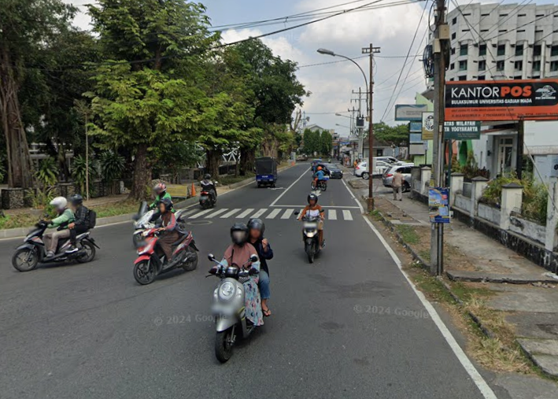Nama Jalan Dr. Sardjito berasal dari nama Prof. Dr. Sardjito (1907–1970), seorang dokter, ilmuwan, dan tokoh pendidikan nasional. Ia dikenal sebagai Rektor pertama Universitas Gadjah Mada setelah universitas tersebut resmi berdiri pada tahun 1949. Prof. Sardjito memiliki peran besar dalam membangun sistem pendidikan tinggi nasional, khususnya di Yogyakarta yang saat itu menjadi pusat pemerintahan Republik Indonesia. Selain sebagai akademisi, ia juga aktif dalam bidang kesehatan masyarakat dan penelitian medis. Penamaan jalan ini merupakan bentuk penghormatan atas jasa-jasanya dalam dunia pendidikan, kesehatan, dan pengabdian kepada negara.
Jalan Cornelis Simanjuntak
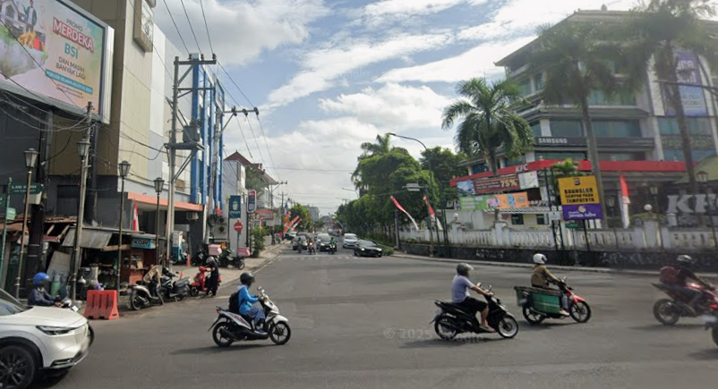Nama Jalan ini dinamai berdasarkan Cornelis Simanjuntak (1921–1946), seorang komponis dan pejuang kemerdekaan Indonesia. Ia dikenal sebagai pencipta berbagai lagu perjuangan yang membangkitkan semangat nasionalisme rakyat Indonesia pada masa revolusi kemerdekaan, seperti lagu-lagu yang sering dinyanyikan oleh para pejuang dan pemuda. Cornelis juga terlibat langsung dalam perjuangan fisik melawan penjajah Belanda hingga akhirnya gugur di usia muda. Nama jalan ini diabadikan untuk mengenang kontribusinya di bidang seni dan perjuangan nasional.
Jalan Cik di Tiro
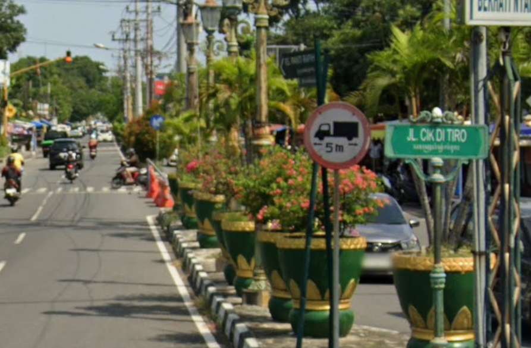Nama Jalan Cik Di Tiro diambil dari Teuku Cik Di Tiro Muhammad Saman, pahlawan nasional asal Aceh. Ia merupakan ulama sekaligus pemimpin perang yang memimpin perlawanan rakyat Aceh terhadap kolonial Belanda pada akhir abad ke-19. Perjuangannya dikenal luas karena berhasil menggerakkan rakyat Aceh untuk melawan penjajahan melalui semangat jihad dan persatuan. Penamaan jalan ini melambangkan semangat perlawanan, keberanian, dan nasionalisme.
Jalan Prof. Kahar Muzakir
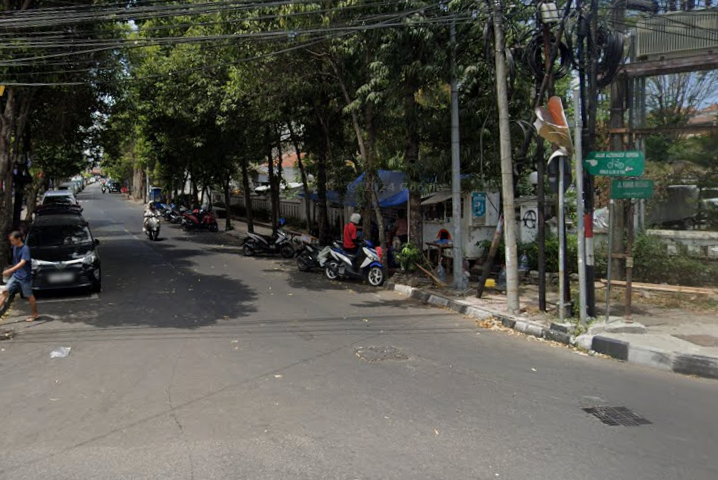Jalan Prof. Kahar Muzakir diambil dari nama Prof. Kahar Muzakir (1907–1973), seorang tokoh nasional di bidang pendidikan, ekonomi, dan politik. Ia merupakan salah satu pendiri Universitas Gadjah Mada dan tokoh penting dalam proses awal berdirinya Republik Indonesia. Prof. Kahar Muzakir juga tercatat sebagai anggota Panitia Persiapan Kemerdekaan Indonesia (PPKI) serta pernah menjabat sebagai Menteri Pendidikan dan Kebudayaan. Penamaan jalan ini merupakan bentuk penghargaan atas jasanya dalam membangun pendidikan dan negara.
Jalan Profesor Doktor Herman Johanes
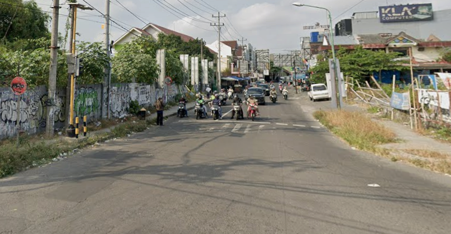Nama jalan ini mengabadikan Prof. Dr. Herman Johannes (1902–1992), seorang ilmuwan fisika, pejuang kemerdekaan, dan tokoh pemerintahan Republik Indonesia. Ia pernah menjabat sebagai Rektor Universitas Gadjah Mada dan aktif dalam berbagai bidang pemerintahan, termasuk perencanaan pembangunan nasional. Herman Johannes juga terlibat dalam perjuangan mempertahankan kemerdekaan, khususnya melalui peran intelektual dan diplomasi. Penamaan jalan ini mencerminkan penghargaan atas dedikasi ilmiah dan pengabdiannya kepada bangsa.
Jalan Jenderal Sudirman
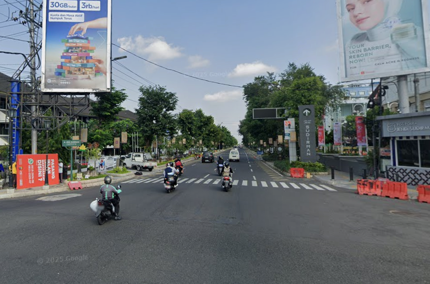Jalan Jenderal Sudirman dinamai dari Jenderal Besar Raden Soedirman (1916–1950), Panglima Besar Tentara Nasional Indonesia pertama. Ia dikenal sebagai simbol keteguhan dan patriotisme bangsa Indonesia karena memimpin perang gerilya melawan Belanda meskipun dalam kondisi sakit parah. Jenderal Sudirman memiliki peran penting dalam mempertahankan kemerdekaan Indonesia, khususnya pada masa Agresi Militer Belanda. Nama beliau diabadikan sebagai teladan kepemimpinan dan pengorbanan.
Jalan Sajiono
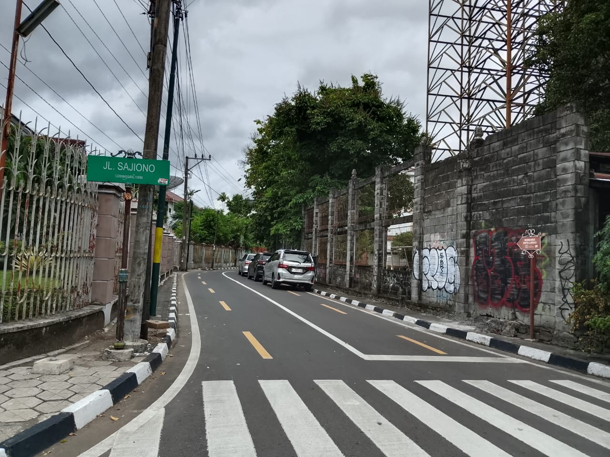Nama jalan ini berasal dari Sajiono, pejuang lokal yang ikut serta dalam Serbuan Kotabaru melawan tentara Jepang. Sajiono gugur dalam pertempuran tersebut dan namanya diabadikan sebagai bentuk penghormatan atas pengorbanannya demi kemerdekaan Indonesia.
Jalan Atmosukarto
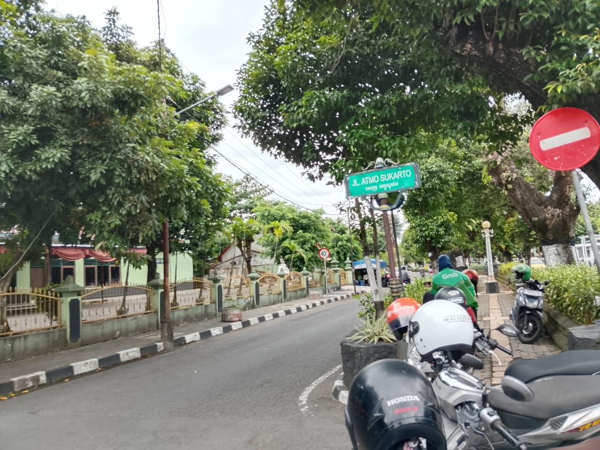Atmosukarto merupakan salah satu pejuang yang gugur dalam peristiwa Serbuan Kotabaru. Ia berjuang bersama para pemuda melawan tentara Jepang demi mempertahankan kemerdekaan Indonesia.
Jalan Trimo
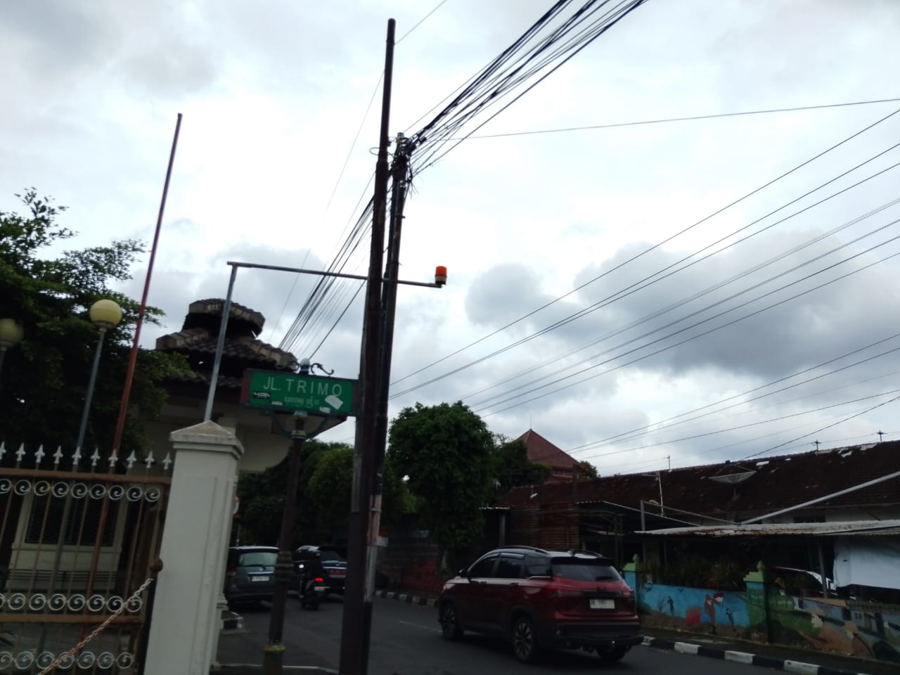Trimo merupakan pejuang muda yang gugur saat Serbuan Kotabaru. Namanya diabadikan sebagai bentuk penghormatan atas jasa dan pengorbanannya dalam perjuangan melawan Jepang.
Jalan Hadidarsono
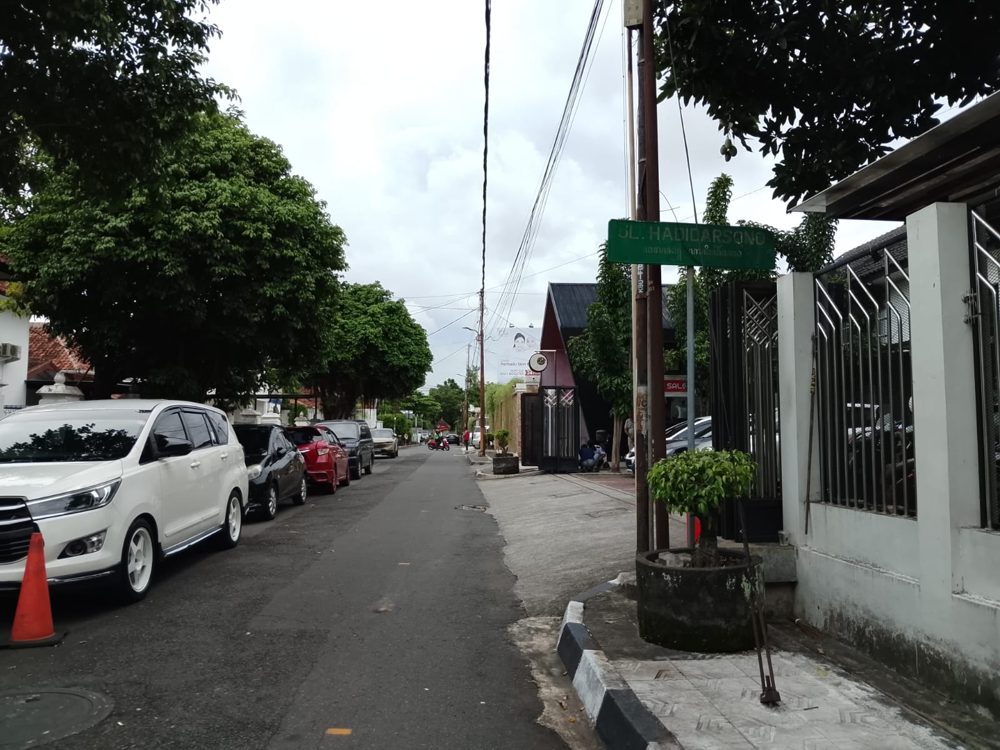Hadidarsono adalah salah satu pejuang yang gugur dalam Serbuan Kotabaru 7 Oktober 1945. Ia bersama para pemuda lainnya berjuang merebut kekuasaan militer Jepang di Yogyakarta.
Jalan Johar Nurhadi
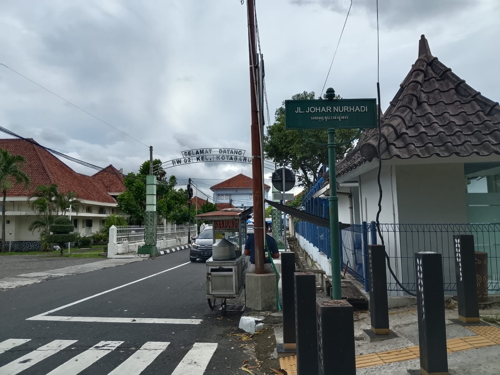Johar Nurhadi merupakan pejuang muda yang gugur dalam peristiwa Serbuan Kotabaru. Namanya diabadikan sebagai nama jalan untuk mengenang keberanian dan pengorbanannya dalam melawan tentara pendudukan Jepang.
Jalan Suhartono
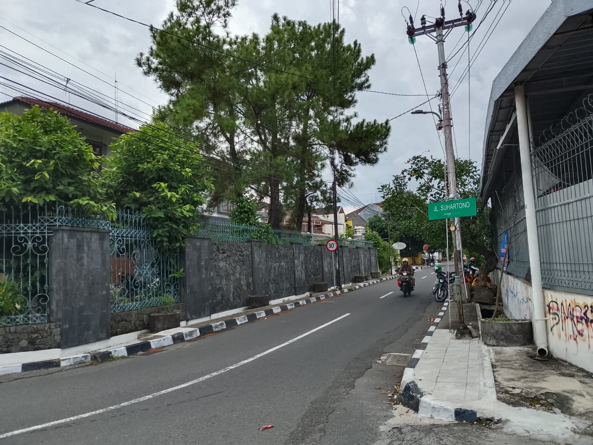Jalan Suhartono dinamai dari Suhartono, pejuang lokal yang terlibat langsung dalam Serbuan Kotabaru. Ia gugur dalam pertempuran melawan Jepang dan dikenang sebagai bagian dari sejarah perjuangan rakyat Yogyakarta.
Jalan Supadi
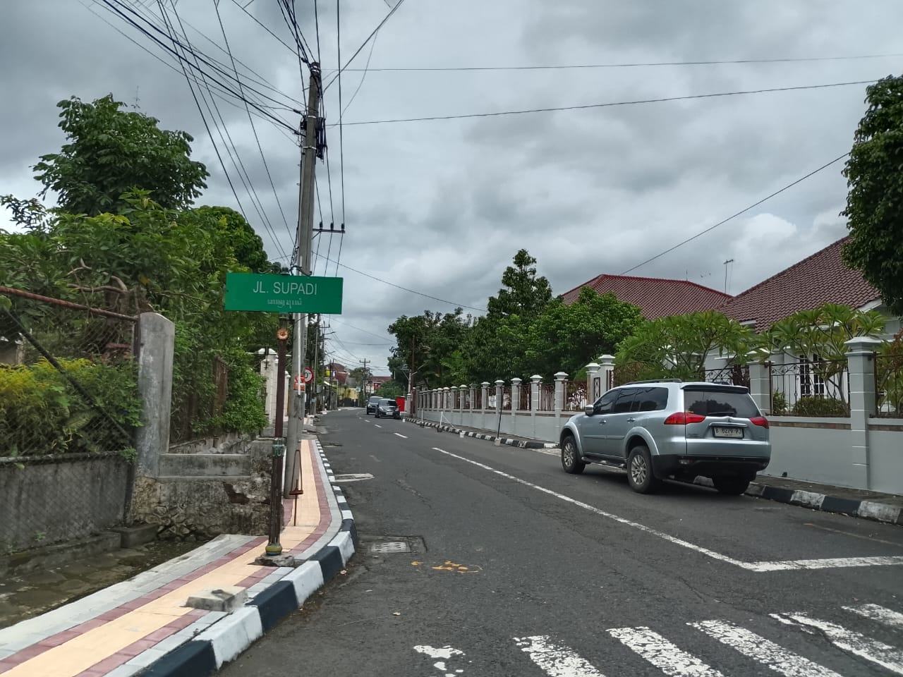Jalan Supadi dinamai untuk mengenang Supadi, salah satu pejuang muda yang gugur dalam peristiwa Serbuan Kotabaru pada 7 Oktober 1945. Ia tergabung dalam laskar pemuda yang menyerbu markas tentara Jepang di Kotabaru Yogyakarta. Perjuangannya menjadi simbol keberanian pemuda dalam merebut kembali kedaulatan Indonesia pascakemerdekaan.